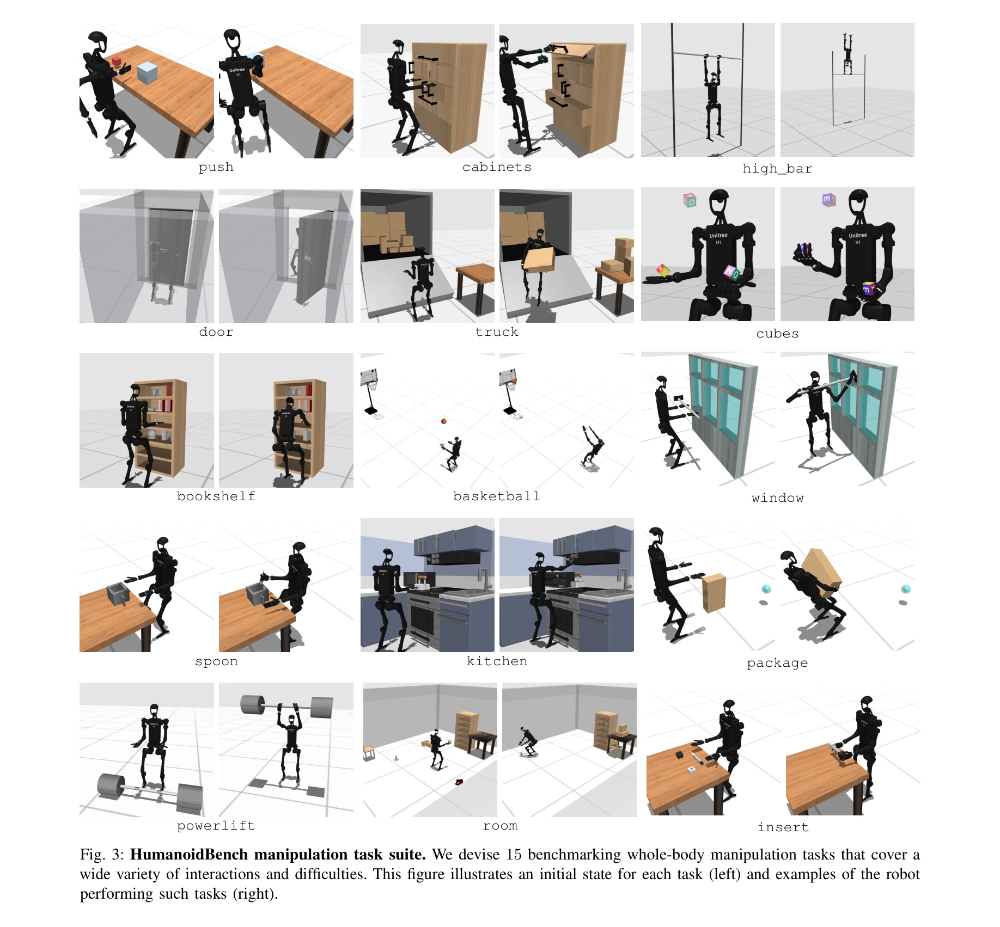
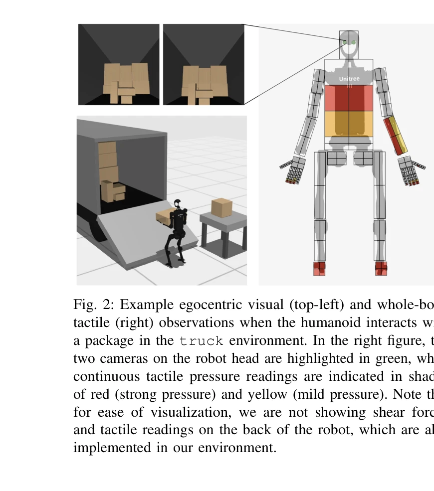

Essence

Fig. 1:
HumanoidBench는 이족 로봇의 전신 조작과 이동 능력을 평가하기 위한 시뮬레이션 벤치마크로, 손가락이 있는 손과 다양한 27개의 도전적인 작업을 포함한다.
저자: Carmelo Sferrazza, Dun-Ming Huang, Xingyu Lin, Youngwoon Lee, Pieter Abbeel | 날짜: 2024-03-15 | URL: https://arxiv.org/abs/2403.10506
Fig. 1:
HumanoidBench는 이족 로봇의 전신 조작과 이동 능력을 평가하기 위한 시뮬레이션 벤치마크로, 손가락이 있는 손과 다양한 27개의 도전적인 작업을 포함한다.

Fig. 3: HumanoidBench manipulation task suite. We devise 15 benchmarking whole-body manipulation tasks that cover a

Fig. 2: Example egocentric visual (top-left) and whole-body
총평: HumanoidBench는 이족 로봇의 전신 제어 문제를 포괄적으로 다루는 첫 번째 벤치마크로서, 로봇 학습 커뮤니티에 중요한 평가 플랫폼을 제공하며, 계층적 학습 접근법의 효과성을 입증하여 향후 이족 로봇 알고리즘 연구의 방향을 제시한다.